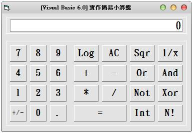

Visual Basic 6.0:實作簡易小算盤 (作者：廖憲得 0xde)

Dim NumberTemp, Temp, S
Private Sub Command1_Click(Index As Integer)
Select Case Command1(Index).Caption
Case 0, 1, 2, 3, 4, 5, 6, 7, 8, 9
If Temp <> "" And S Then S = False: Text1.Text = 0
Text1.Text = Val(Text1.Text & Command1(Index).Caption) ' 是數值就 And 完後 Val
Case "+/-"
Text1.Text = -Text1.Text ' * -1 等於 補負號
Case "."
If InStr(Text1, ".") = 0 Then Text1.Text = Text1.Text & "." ' 判斷沒有點的話在加一個點
Case "Log"
If Val(Text1.Text) > 0 Then Text1.Text = Log(Val(Text1.Text)) / Log(10) ' VB6 的 Log 公式為 Log(數值) / Log(N) N = 底數
Case "AC"
Text1.Text = 0 ' 將顯示歸零
Temp = "" ' 運算暫存清空
Case "Sqr"
Text1.Text = Sqr(Text1) ' 開根號的函數為 Sqr (數值)
Case "1/x"
Text1.Text = 1 / Text1.Text ' 倒數
Case "N!"
Text1.Text = N(Text1.Text) ' 呼叫階乘副程式
Case "Int"
Text1.Text = Int(Text1.Text) ' 取整數
Case "+", "-", "*", "/", "And", "Xor", "Or", "Not"
S = True
If Temp = "" Then ' 當運算元為空時
Temp = Command1(Index).Caption ' 紀錄運算元
NumberTemp = Text1.Text ' 紀錄運算子
Else
Call Change(Temp) ' 運算
Temp = Command1(Index).Caption ' 紀錄運算元
NumberTemp = Text1.Text ' 紀錄運算子
End If
Case "="
Call Change(Temp) ' 運算
NumberTemp = Text1.Text ' 紀錄運算子
End Select
End Sub
Function Change(N) ' 運算
If N <> "" Then
Select Case N
Case "+"
Text1.Text = NumberTemp + Val(Text1.Text)
Case "-"
Text1.Text = NumberTemp - Val(Text1.Text)
Case "*"
Text1.Text = NumberTemp * Val(Text1.Text)
Case "/"
Text1.Text = NumberTemp / Val(Text1.Text)
Case "Or"
Text1.Text = NumberTemp Or Val(Text1.Text)
Case "And"
Text1.Text = NumberTemp And Val(Text1.Text)
Case "Xor"
Text1.Text = NumberTemp Xor Val(Text1.Text)
Case "Not"
Text1.Text = Not NumberTemp
End Select
End If
End Function
Function N(Inp) ' 階乘副程式
If Inp = 1 Then
N = 1
Else
N = Inp * N(Inp - 1)
End If
End Function- 原始碼下載： 實作簡易小算盤.rar
【本文作者為「廖憲得」，原文網址為： http://www.dotblogs.com.tw/0xde/archive/2013/11/07/127248.aspx ，由陳鍾誠編輯後納入本雜誌】